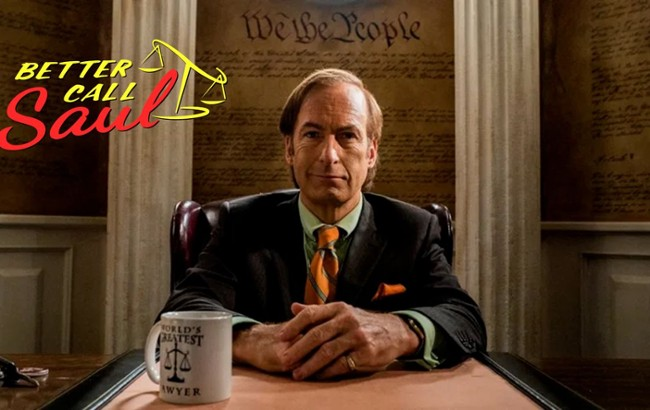

"Better Call Saul!"
Saul Goodman, born James Morgan "Jimmy" McGill, is one of the most memorable characters from the critically acclaimed TV shows Breaking Bad and Better Call Saul. Starting as a struggling attorney in Albuquerque, Jimmy McGill transforms into the flashy and morally flexible lawyer, Saul Goodman, known for his slogan, "Better Call Saul!" His character embodies a complex mix of ambition, creativity, and ethical ambiguity, making him a compelling figure in modern television history.
In Breaking Bad, Saul becomes a key player in Walter White and Jesse Pinkman's illicit drug empire, providing legal advice and questionable solutions to their increasingly dangerous problems. In Better Call Saul, viewers witness Jimmy McGill's journey to becoming Saul, exploring his early struggles, relationships, and ethical dilemmas.
Bob Odenkirk, a versatile actor, writer, and comedian, has received widespread acclaim for his portrayal of Saul Goodman. His performance brought depth and humor to the character, earning him numerous accolades, including: